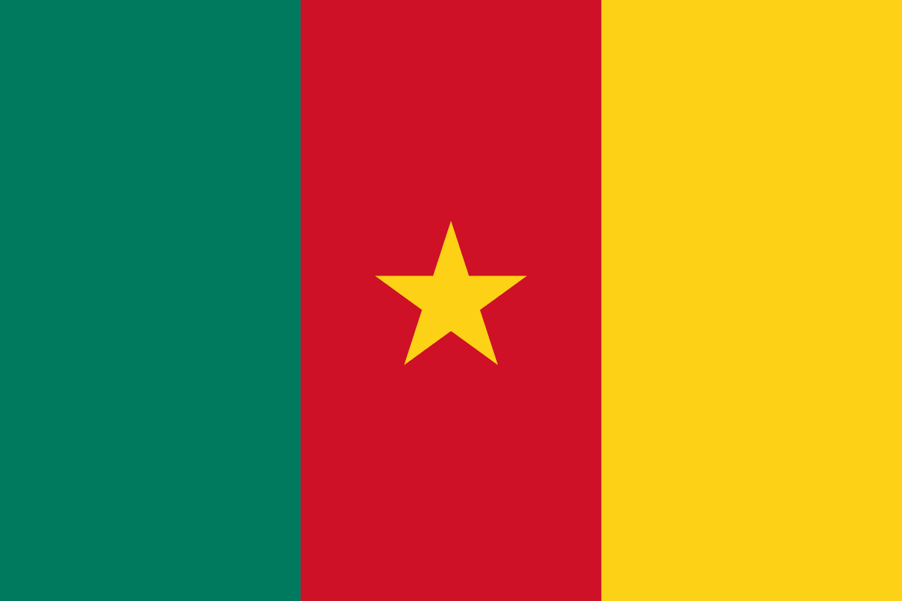
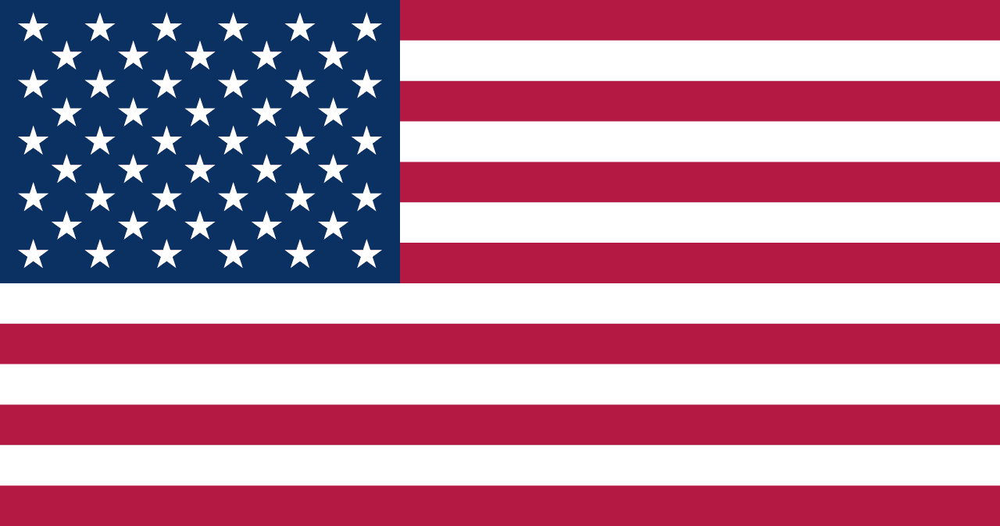

Two Nations, One Heritage
Rooted in Cameroon, thriving in the United States — our association stands as a bridge between the land of our ancestors and the home we are building today.

The Voice of Our Heritage
The Nkul is the ancestral talking drum of the Nkul Ekang people. For generations, it has served as a sophisticated communication tool, transmitting messages over long distances through the dense equatorial forests of Central Africa.
By naming our association Nkul Ekang Y'America, we honor this tradition of communication and gathering. We strive to be the modern "Nkul" that calls upon all sons and daughters of the Nkul Ekang diaspora to unite, share, and thrive together in the United States.
History & Birth
The Nkul Ekang Cultural Association of North America was born in 2020, out of the desire to bring together members of the Nkul Ekang community around fundamental values such as solidarity, fraternity, respect, mutual aid, and the preservation of our cultural identity.
From its creation, the association set itself the ambition of building a framework where members could reconnect, maintain community ties, and work collectively to improve their living conditions in North America.
The association is part of a broader movement to gather and celebrate Nkul Ekang heritage, notably through the transmission of the culture, traditions, values, language, music, dance, cuisine, and history of the Nkul Ekang people.
Evolution of the Association
In December 2022, the association reached an important milestone in its history with the election of its president, Mekinda Mekinda Junior, marking a new phase in its structuring and in the implementation of its objectives.
This new governance strengthened the internal organization with a spirit of discipline, with the aim of better coordinating members' initiatives while giving clearer direction to community actions.
In May 2023, the organization continued its institutional evolution by converting its status from an LLC to an INC (Non-Profit Organization). The goal of this change was to impact the community through our charitable actions, while making it self-reliant.
Our Vision
Our vision is to build a united, supportive, culturally strong, and economically self-reliant Nkul Ekang community, able to fully contribute to the development of its members and to the influence of Nkul Ekang culture in North America.
We believe that unity is the foundation of collective progress. The association therefore seeks to create an environment where every member can find support, develop their skills, share their experiences, and actively participate in building a stronger community.
Our Mission
The association's main mission is to bring together, support, and accompany members of the Nkul Ekang community in North America, while ensuring the preservation and transmission of our cultural heritage. The association is active in particular in the following areas:
- Mutual aid and solidarity among members
- Empowerment and independence of members
- Economic and professional development
- Promotion of entrepreneurship and individual and collective initiatives
- Preservation and transmission of Nkul Ekang culture
- Organization of cultural, social, and community activities
- Support for youth and new generations
- Creation of professional and community networks
- Support for members in difficult times
- Strengthening ties between the different generations and components of the Nkul Ekang community
Mutual Aid as a Core Value
One of the distinguishing features of our association is its commitment to community mutual aid.
We believe that the success of one member can contribute to the success of the entire community. As such, the association encourages the sharing of knowledge, experiences, opportunities, and resources.
The goal is not only to help members on a one-off basis, but above all to enable them to gradually become self-reliant and independent.
We therefore want to move from a logic of assistance to a true logic of empowerment: helping a member find a lasting solution, grow their business, improve their professional situation, start their own company, or acquire the skills needed to build their future.
Promoting Ekang Culture
Culture is at the heart of our identity.
The association works to preserve and promote Ekang values and traditions among current and future generations. This mission can take the form of cultural gatherings, conferences, artistic activities, storytelling, music, traditional dance, cuisine, language transmission, and knowledge of our history.
This approach joins the broader movement of Ekang organizations that, across North America, seek to make culture a tool for cohesion, transmission, and community influence (ebya2024.org).
A Community Looking to the Future
The association also wishes to support members in their integration and success in North America. It notably encourages:
- Academic success for young people
- Professional development
- Entrepreneurship
- Networking
- Sharing of opportunities
- Business creation
- Community investment
- Leadership among youth and women
- Transmission of Nkul Ekang values to new generations
Our ambition is to make the Nkul Ekang community a strong, organized, prosperous community, capable of taking charge of its own development.
Our Core Values
Respect
Honoring the dignity of every individual, our elders, and the diversity within our Nkul Ekang community and beyond.
Tolerance
Embracing openness and understanding across our different backgrounds, beliefs, and generations.
Mutual Aid
Standing together in solidarity, supporting one another through life's challenges as one extended family.
Autonomy
Empowering members to become self-reliant, building lasting solutions and taking charge of their own future.
Transmission
Passing on our language, traditions, and history to the next generations so our heritage lives on.
Our Ambition
Through its evolution since 2020, the association intends to build a lasting organization, able to meet the needs of its members while contributing to the influence of Nkul Ekang culture in North America.
“Unite to help one another, help one another to become self-reliant, and become self-reliant to build a better future together.”
The Nkul Ekang Cultural Association of North America thus aims to be a space of fraternity, culture, mutual aid, and empowerment, serving its members and future generations.